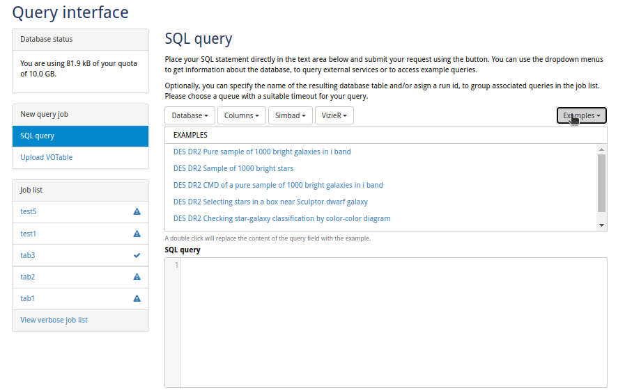
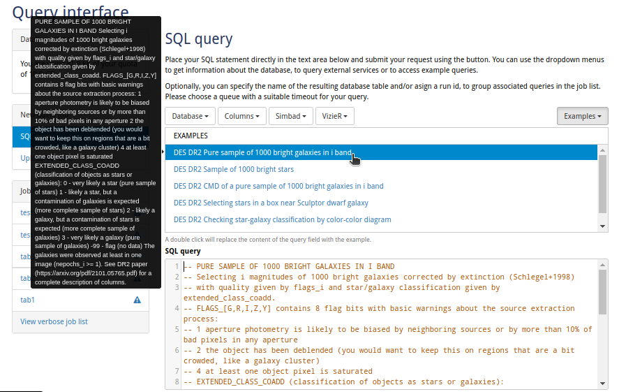
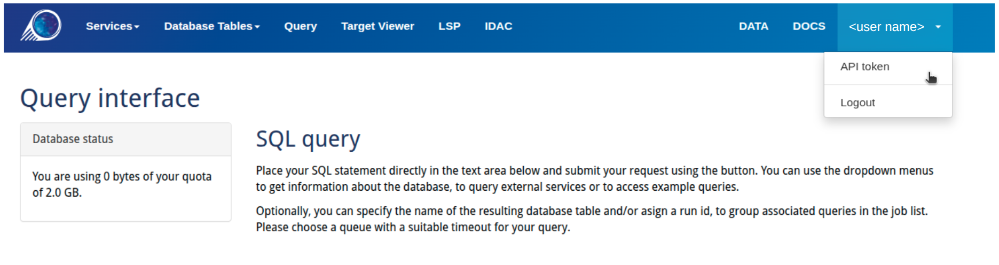
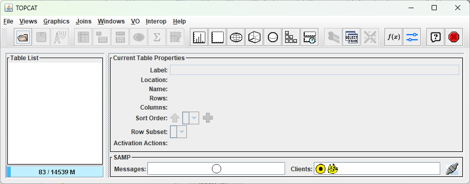
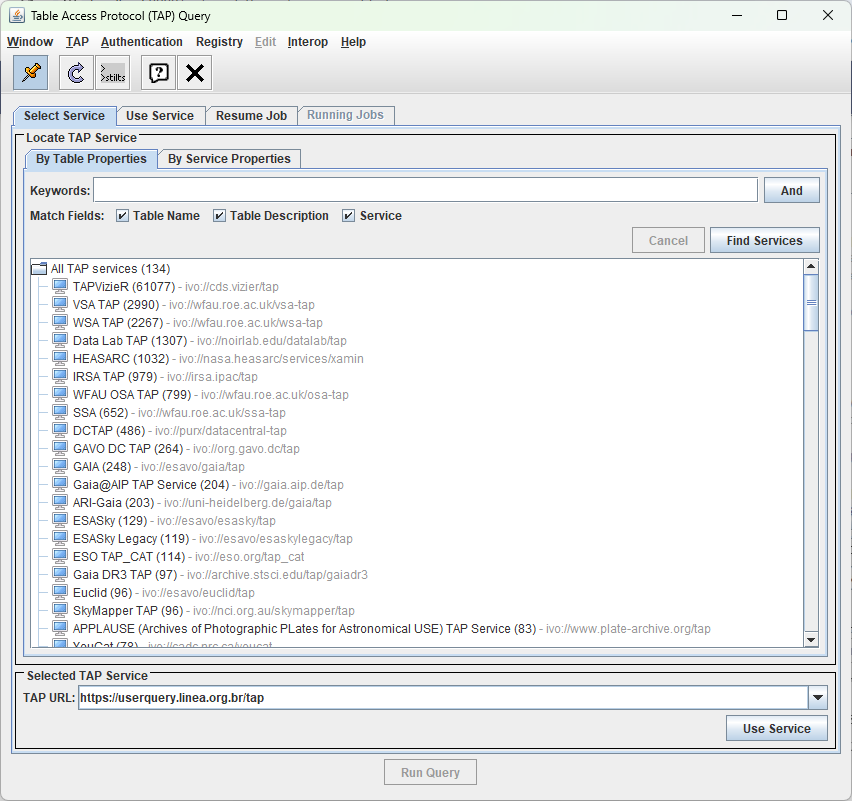
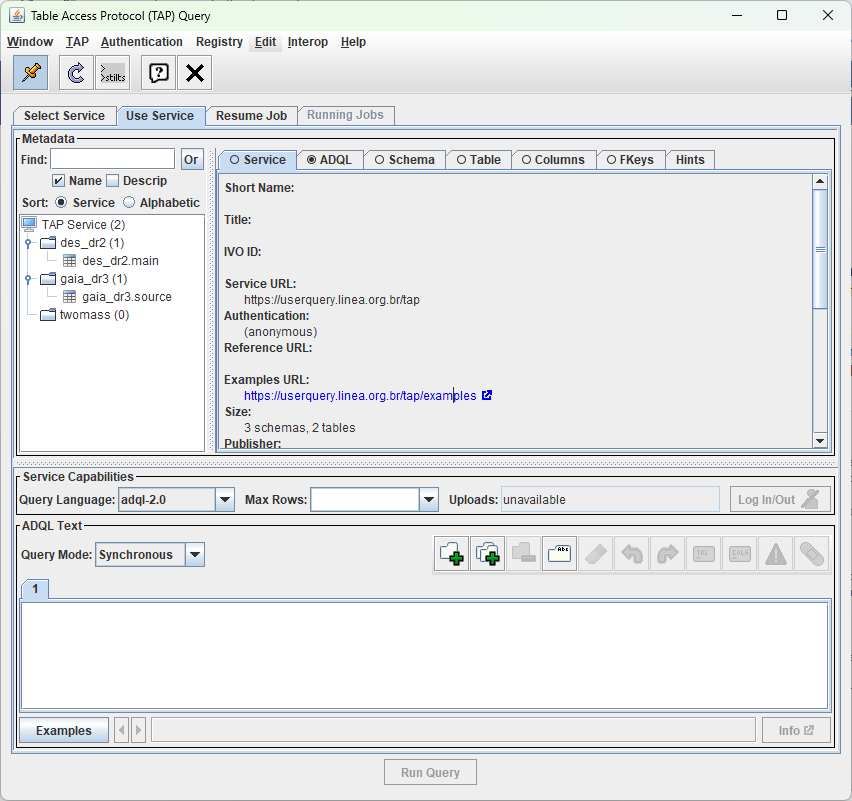

User Query
El User Query es la interfaz SQL basada en web de LIneA para consultar bases de datos astronómicas. Permite ejecutar consultas sobre catálogos de surveys públicos (como DES DR2 y Gaia DR3), guardar resultados en su espacio de trabajo personal y exportar datos en diversos formatos.
Las tablas que crea se almacenan en MyDB, su espacio privado de base de datos. Estas tablas pueden accederse inmediatamente desde el JupyterHub de LIneA o de forma remota a través del TAP Service. Si su tabla incluye coordenadas celestes (AR/Dec) e identificadores únicos, estará disponible automáticamente en Target Viewer para la visualización de imágenes.
Interfaz web¶
Al abrir User Query, verá la interfaz principal de consultas dividida en tres áreas: la barra lateral a la izquierda con su cuota de almacenamiento e historial de trabajos, el editor SQL en el centro donde escribe las consultas, y la barra de herramientas en la parte superior con herramientas de navegación de bases de datos y consultas de ejemplo.

Escribir y enviar consultas¶
Para ejecutar una consulta:
- Escriba su SQL en el editor, o haga clic en el menú desplegable Examples para cargar una consulta predefinida
- Elija el dialecto SQL:
ADQLpara consultas VO estándar oPostgreSQLpara funciones avanzadas - Seleccione una cola según el tiempo estimado de ejecución
- Haga clic en "Submit" para ejecutar la consulta
La captura de pantalla a continuación muestra una consulta de ejemplo cargada desde el menú Examples. Observe cómo al seleccionar un ejemplo se completa el editor SQL y se muestra una descripción de la consulta en el tooltip.

Opciones de consulta¶
Antes de enviar, configure la ejecución de su consulta:
| Opción | Descripción |
|---|---|
| Queue | Elija según el tiempo de ejecución esperado: 30 seconds para pruebas rápidas, 5 minutes para joins y filtros, o 2 hours para crossmatches extensos. La consulta se cancela si excede el límite de tiempo. |
| Table name | Nombre para la tabla de resultados (por defecto usa una marca de tiempo si se deja en blanco). |
| Run ID | Etiqueta opcional para agrupar consultas relacionadas en la lista de trabajos—útil para organizar consultas por proyecto o tarea de análisis. |
Gestión de resultados¶
Las consultas completadas aparecen en la Job list en la barra lateral izquierda. Haga clic en cualquier trabajo para:
- Ver resultados en una tabla interactiva
- Crear gráficos a partir de columnas numéricas
- Descargar en formato CSV, VOTable o FITS
- Archivar para liberar espacio de cuota
Su cuota de almacenamiento personal es de 10 GB.
Formatos de descarga¶
Exporte sus resultados desde la pestaña Download:
| Formato | Cuándo utilizarlo |
|---|---|
| CSV | Hojas de cálculo, scripts de propósito general |
| VOTable | Interoperabilidad con herramientas VO como TOPCAT |
| FITS | Pipelines astronómicos, almacenamiento de archivo |
TAP Service¶
Para flujos de trabajo automatizados, análisis reproducibles o acceso a datos embargados, puede consultar las bases de datos de LIneA directamente desde Python utilizando el TAP Service (Table Access Protocol) y la biblioteca pyvo.
Obtener su token de API¶
Para acceder a catálogos restringidos (como los productos de datos de LSST), necesita un token de API. En la interfaz de User Query, haga clic en su nombre de usuario en la esquina superior derecha de la barra de navegación para abrir el menú desplegable, luego seleccione "API token".

Mantenga su token seguro
Su token de API otorga acceso a su cuenta y a cualquier dato restringido que esté autorizado a consultar. Nunca lo comparta ni lo incluya en repositorios públicos.
Configuración¶
Instale las bibliotecas requeridas:
pip install pyvo requests
Lenguaje de consulta
Los ejemplos a continuación utilizan sintaxis ADQL (por ejemplo, SELECT TOP n en lugar de LIMIT n), que es el valor predeterminado. Para usar sintaxis PostgreSQL, agregue language="postgresql" a sus llamadas de consulta:
result = tap.run_sync(query, language="postgresql")
Consultas síncronas¶
Para consultas rápidas que se completan en menos de 30 segundos, utilice el modo síncrono:
import pyvo
import requests
# Endpoint TAP de LIneA
url = "https://userquery.linea.org.br/tap"
# Su token de API (obténgalo desde User Query → API Token)
token = "Token YOUR_TOKEN_HERE"
# Crear sesión autenticada
session = requests.Session()
session.headers["Authorization"] = token
# Conectar al servicio TAP
tap = pyvo.dal.TAPService(url, session=session)
# Ejecutar consulta
query = "SELECT TOP 100 ra, dec, mag_auto_g FROM des_dr2.main"
result = tap.run_sync(query)
# Convertir a tabla y mostrar
table = result.to_table()
print(table)
Consultas asíncronas¶
Para consultas más extensas que pueden tomar minutos u horas, utilice el modo asíncrono. Este enfoque es más robusto: los trabajos sobreviven a interrupciones de red y no tienen límites de tiempo del navegador.
Configure el parámetro QUEUE para consultas largas
Por defecto, las consultas expiran después de 30 segundos. Para consultas más largas, debe especificar el parámetro QUEUE al enviar el trabajo:
"default"— 30 segundos"five_minutes"— 5 minutos"two_hours"— 2 horas
import pyvo
import requests
import time
from io import BytesIO
from astropy.table import Table
url = "https://userquery.linea.org.br/tap"
token = "Token YOUR_TOKEN_HERE"
session = requests.Session()
session.headers["Authorization"] = token
tap = pyvo.dal.TAPService(url, session=session)
# Enviar una consulta de larga duración
query = """
SELECT TOP 500000
ra, dec, mag_auto_g, mag_auto_r, mag_auto_i
FROM des_dr2.main
WHERE mag_auto_g < 20
"""
# Opciones de QUEUE: "default", "five_minutes", "two_hours" (por defecto es 30 segundos)
job = tap.submit_job(query, QUEUE="two_hours")
job.run()
print(f"Job ID: {job.job_id}")
while job.phase not in ("COMPLETED", "ERROR", "ABORTED"):
print(f"Status: {job.phase}", end="\r")
time.sleep(5)
print(f"Status: {job.phase}")
if job.phase == "COMPLETED":
print("Fetching the results...", end="\r")
# Construir la URL del resultado manualmente para evitar problemas de resolución de enlaces de PyVO
result_url = f"{url}/async/{job.job_id}/results/result"
# Obtener el resultado
r = requests.get(result_url, headers=session.headers)
table = Table.read(BytesIO(r.content), format='votable')
print("Query completed successfully.")
else:
print(f"Job failed with status: {job.phase}")
print(table)
Cuándo usar async
Utilice consultas asíncronas cuando espere que la consulta tome más de 30 segundos, cuando ejecute consultas en scripts por lotes, o cuando necesite recuperar resultados posteriormente.
Dialectos SQL¶
El User Query admite dos dialectos SQL:
ADQL — El Astronomical Data Query Language, un estándar VO con funciones de geometría integradas:
SELECT * FROM des_dr2.main
WHERE CONTAINS(POINT('ICRS', ra, dec), CIRCLE('ICRS', 53.0, -28.0, 0.5)) = 1
PostgreSQL — Sintaxis nativa con extensiones espaciales para usuarios avanzados. Los índices Q3C y PgSphere están disponibles:
-- Usando Q3C (consultas radiales rápidas)
SELECT * FROM des_dr2.main
WHERE q3c_radial_query(ra, dec, 53.0, -28.0, 0.5)
-- Usando PgSphere (operadores de geometría esférica)
SELECT * FROM des_dr2.main
WHERE spoint(radians(ra), radians(dec)) @ scircle(spoint(radians(53.0), radians(-28.0)), radians(0.5))
Ambos dialectos funcionan bien: las consultas ADQL se traducen automáticamente a PostgreSQL optimizado internamente.
Uso de TOPCAT¶
TOPCAT es una aplicación de escritorio popular para trabajar con tablas astronómicas. Puede conectarla a los catálogos públicos de LIneA mediante TAP.
Paso 1: Abra la ventana de consulta TAP desde VO → Table Access Protocol (TAP) Query.

Paso 2: Ingrese la URL del endpoint de LIneA en el campo TAP URL en la parte inferior: https://userquery.linea.org.br/tap, luego haga clic en "Use Service".

Paso 3: Una vez conectado, el panel izquierdo muestra los esquemas y tablas disponibles. Haga clic en una tabla para ver sus columnas y metadatos a la derecha. Utilice el botón Examples para cargar consultas de ejemplo, luego haga clic en "Run Query" para ejecutar.
